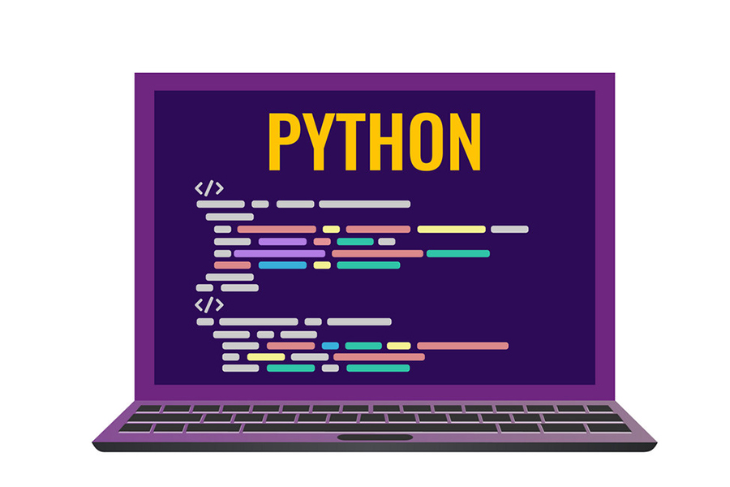
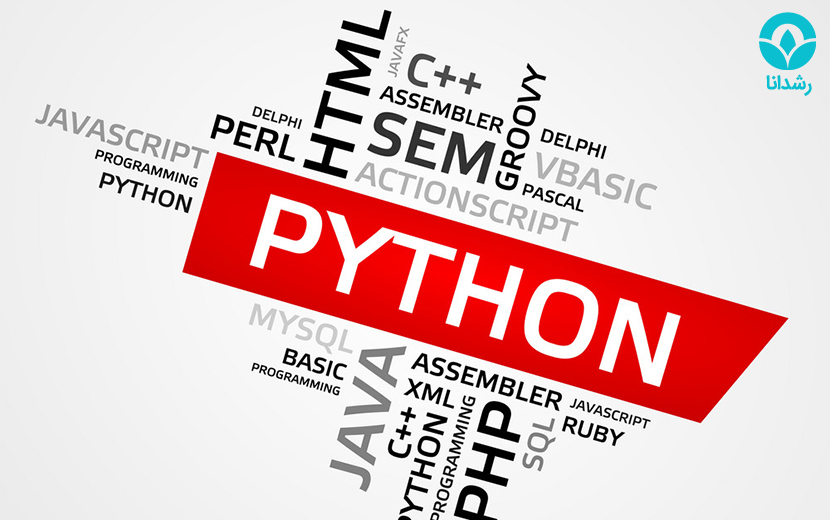
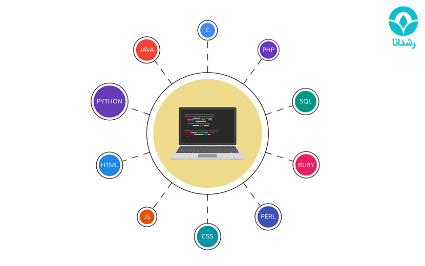

Python
این روزها زبانهای برنامه نویسی متعددی به وجود آمده است. یکی از چالشهایی که برنامه نویسان با آن روبرو هستند، انتخاب زبان برنامه نویسی مناسب است. هرکدام از زبانهای موجود در دنیای برنامه نویسی، دارای…
این روزها زبانهای برنامه نویسی متعددی به وجود آمده است. یکی از چالشهایی که برنامه نویسان با آن روبرو هستند، انتخاب زبان برنامه نویسی مناسب است. هرکدام از زبانهای موجود در دنیای برنامه نویسی، دارای ویژگیهای خاصی هستند. یکی از زبانهای مطرحی که این روزها توسط جمع کثیری از برنامه نویسان استفاده میشود، زبان برنامه نویسی پایتون است که روز به روز به میزان محبوبیت آن نیز افزوده میشود. این زبان در حوزههای مختلفی ازجمله برنامه نویسی هوش مصنوعی، توسعه وب، ساخت اپلیکیشنهای موبایل و دسکتاپ کاربرد دارد. اگر شما هم در زمینه برنامه نویسی فعالیت دارید، اما برای یافتن زبان موردنظر خود دچار تردید هستید، ادامه این مقاله را از دست ندهید. در این مقاله با رشدانا همراه باشید چون قصد داریم به شما بگوییم برنامه نویسی پایتون چیست و چه کاربردی دارد.

زبان برنامه نویسی پایتون چیست؟
امروزه در دنیای برنامه نویسی، پایتون یا (Python) یکی از قدرتمندترین زبانهای برنامه نویسی است. این زبان با ویژگیهای شی گرا، تفسیری،سطح بالا، حرفهای بودن و چند منظوره بودن در حال گسترش روزافزون در جهان است. با به وجود آمدن پایتون، تحول شگرفی در دنیای برنامه نویسی توسعه برنامههای وب و طراحی بازیهای رایانهای به وجود آمد. این زبان از سال ۱۹۹۱ وارد دنیای برنامه نویسی شده و توسط خیدو فان رسوم طراحی شده و در سالهای اخیر بیشتر موردتوجه برنامه نویسان قرار گرفته است.
تعداد کلمات کلیدی در این زبان کم، ساده و قابل درک است و این موضوع باعث شده است تا پایتون موردتوجه کاربران تازه کار قرار بگیرد. این زبان برنامه نویسی پیچیدگیهای سایر زبانها را ندارد و به راحتی قابل استفاده است. در ادامه مقاله به شما خواهیم گفت که سایر ویژگیها و کابرد زبان برنامه نویسی پایتون چیست؟
چرا زبان برنامه نویسی پایتون محبوب است؟
در بازار کار این طور جا افتاده است که میانگین درآمد برنامه نویسهای پایتون نسبتا بالا است! اما این موضوع به تنهایی دلیل محبوبیت این زبان محسوب نمیشود. در ادامه چند مورد از مهمترین دلایلی که پایتون زبان محبوب برنامه نویسان شده است را بیان میکنیم.

غولهای فناوری دنیا از پایتون استفاده میکنند!
یکی از دلایلی که برنامه نویسان زیادی به استفاده از پایتون روی آوردهاند، استفاده شرکتهای معتبر فناوری از آن است. گوگل، یوتیوب، فیس بوک، ناسا، دراپ باکس، یاهو، موزیلا، کورا، اینستاگرام، ردیت و بسیاری از غولهای فناوری دنیا به طور گسترده از پایتون استفاده میکنند و همچنان نیز به دنبال استخدام برنامه نویسان پایتون هستند. همین موضوع سبب شده است تا اعتبار خاصی برای این زبان به وجود بیاید و سبب محبوبیت روزافزون آن شود.
به طور گسترده در یادگیری ماشین، مورد استفاده قرار میگیرد
زمانی که علم داده رشد کرد، محبوبیت زبان پایتون نیز به اوج خود رسید. کتابخانههای (یادگیری ماشین) زیادی به زبان پایتون نوشته شدند. همچنین ابزارهای زیادی پدید آمدند تا با استفاده از پایتون، انجام پروژههای یادگیری ماشین را راحتتر سازند.
مناسب برای مبتدیها
زبان برنامه نویسی پایتون میتواند یکی از انتخابهای فوق العاده برای برنامه نویسهای مبتدی باشد. سهولت در یادگیری پایتون و انعطاف پذیری آن باعث شده تا کسانی که به تازگی به عرصه برنامه نویسی وارد شدهاند و هنوز نمی دانند برنامه نویسی چیست، در ابتدا به سراغ یادگیری این زبان بروند.
پایتون همه کاره است
پایتون یک زبان همه منظوره است؛ به همین دلیل میتواند برای کلیه پروژهها مورد استفاده قرار بگیرد. به عبارت بهتر زمانی که یک برنامه نویس بتواند تسلط کامل به این زبان را به دست آورد، از یادگیری سایر زبانها بینیاز خواهد بود. از این زبان میتوان برای ساخت وبسایتها، توسعه واسط گرافیکی کاربر و تحلیل داده استفاده کرد. این قابلیت پایتون به این دلیل است که این زبان توانسته قابلیتهای زبانهای برنامه نویسی مختلف را یک جا جمع کند. به قول معروف آنچه خوبان همه دارند، پایتون به تنهایی دارد!
با ویژگیهای پایتون آشنا شوید
زبان برنامه نویسی پایتون را معمولا میتوان با زبانهای پرل (Perl)، روبی (Ruby)، پی اچ پی (PHP) و جاوا مقایسه کرد. این مقایسه به دلیل قدرت بالای پایتون، به عنوان یک زبان برنامه نویسی شی گرا، صورت میپذیرد. این زبان ویژگیهای بارزی دارد که سبب شده از سایر رقبای خود متمایز شود و به یکی از زبانهای جذاب برنامه نویسی بدل شود. در ادامه به شرح مزایا و معایب این زبان میپردازیم.

مزایای زبان برنامه نویسی پایتون چیست؟
شرکتهای نرم افزاری زیادی به دلیل مزایای فوق العاده پایتون به استفاده از این زبان روی آوردهاند. تقریبا ۱۴ درصد از برنامه نویسان حرفهای از این زبان بر روی سیستم عاملهایی مانند یونیکس، لینوکس، ویندوز و مک استفاده میکنند. در ادامه برخی از مزایای پایتون را برمیشماریم.
کتابخانههای پشتیبان گسترده
یکی از مزایای پایتون کتابخانههای گسترده است. زبان پایتون کتابخانههای استاندارد زیادی در زمینههای مختلف مانند: عملیات روی رشتهها، اینترنت، ابزارهای وب سرویس، رابطهای سیستم عامل و پروتکلها دارد. بیشتر امور برنامه نویسی، در پایتون اسکریپت نویسی میشوند. بدین ترتیب تعداد خطوط کد موردنیاز برای نوشتن یک برنامه کاهش مییابد.
یکپارچگی ویژگیها
پایتون سبب یکپارچه سازی (Enterprise Application Integration) میشود. همچنین سبب توسعه سرویسهای وب با استفاده از فراخوانی مولفههای COM یا COBRA میشود. این زبان تواناییهای کنترلی قوی دارد. همچنین میتواند XML و سایر زبانهای نشانه گذاری را پردازش کند.
بهبود بهرهوری برنامه نویسها
این زبان برنامه نویسی، کتابخانههای پشتیبان گسترده و طراحی شی گرای حرفهای دارد. همین امر سبب بهبود بهرهوری برنامه نویسهایی که از این زبان استفاده میکنند، شده است.
تفسیرشده بودن پایتون
یکی دیگر از نقاط قوت این زبان برنامهنویسی، تفسیر شده بودن آن است. منظور از تفسیر شده، این است که قابلیت خوانش کدها و اجرای پشت سر هم تک تک خطها را دارد. همچنین اگر برنامهنویس در قسمتی از کدنویسی دچار اشتباه شده باشد، خطای رخ داده را مشخص میکند. به همین دلیل رفع اشتباه در کدهای این زبان، بسیار راحت است و دیگر نیازی نیست متخصص برنامهنویسی تک تک خطها را بررسی کند.
متن باز بودن
دسترسی رایگان به این زبان و متن باز بودن آن، یکی دیگر از مزایای مهم پایتون محسوب میشود. این ویژگی، سبب میشود تا برنامهنویس بتواند هر کد منبع را دانلود کند و پس از اصلاح آن، نسخه کدهای خود را در پایتون قرار دهد. این مزیت، زمانی به دردتان میخورد که بخواهید مجددا از کدهای نوشته شده استفاده کنید و از زمان خود استفاده بهینه ببرید.
قابلیت جابجایی
اکثر زبانهای برنامهنویسی به گونهای هستند که اگر بخواهید آنها را در سیستم عامل دیگری اجرا کنید، باید تغییر کنند. این در حالی است که برای اجرای کدهای پایتون در سیستم عاملهای متفاوت، هیچ نیازی به اعمال تغییرات وجود ندارد. در این زبان، تنها یک بار کد نوشته میشود و قابلیت اجرا در هر سیستم دیگری نیز وجود دارد.
شیگرایی
پشتیبانی پایتون از الگوهای برنامهنویسی شیگرا، یکی دیگر از ویژگیهای مثبت این زبان است. در این زبان برنامهنویسی، کارآیی توابع در استفاده مجدد از کدها و کمک اشیا و کلاسها به مدلسازی دنیای واقعی، سبب شده تا روز به روز به تعداد طرفداران پایتون افزوده شود.
امکان ادغام با سایر زبانهای موجود
اخرین مزیت پایتون امکان ادغام با سایر زبان های موجود است. یکی دیگر از مزایای این زبان، امکان ادغام با زبانهایی مانند جاوا و C است. این مزیت کمک میکند تا قدرت پایتون افزایش یابد؛ چرا که با ادغام زبانها با یکدیگر، نقاط ضعف هر کدام اصلاح خواهد شد. علاوه بر موارد گفته شده، سایر مزایایی که برای این زبان ذکر شده، عبارتند از:
- فرصتهای IOT
- تایپ پویا
- قابلیت جاسازی
معایب زبان برنامه نویسی پایتون چیست ؟
با اینکه زبان پایتون دارای مزایای زیادی است و همین مزایا سبب محبوبیت آن شده است، اما باز هم تعدادی محدودیت و ایراد دارد. در ادامه به شما خواهیم گفت که معایب زبان برنامه نویسی پایتون چیست.
سرعت پایین
همانطور که در قسمتهای قبلی اشاره کردیم، پایتون زبانی تفسیر شده و تایپ شده است و همین عامل سبب شده تا کدها به صورت خط به خط به اجرا دربیایند و سرعت آن کاهش یابد. از دیگر دلایل سرعت کم آن، مشخصه تایپ خودکار در آن است؛ چراکه این حالت، نیاز به انجام کارهای بیشتری در فرآیند اجرا دارد. به دلیل سرعت عمل پایین این زبان، در پروژههایی که سرعت و زمان در آنها اهمیت دارند، از پایتون استفاده نمیشود.
ایجاد خطای زمان اجرا
از آنجایی که این زبان دارای تایپ خودکار است، محدودیتهای فراوانی به همراه دارد. در واقع پویا بودن پایتون باعث میشود که نوع داده یک متغیر را خود به خود تغییر دهد و همین امر، سبب بروز خطاهای زمان اجرا میشود.
بروز مشکل در زمان استفاده از سایر زبانها
زمانی که مدت زمان نسبتا طولانی از کار کردن با پایتون بگذرد، به کتابخانه گسترده و مشخصات آن عادت خواهید کرد. همین امر، یادگیری و کار با زبانهای دیگر را دشوار کرده و شما را با مشکل روبرو خواهد کرد.
دسترسی به دیتاسنتر
همانطور که میدانید، برنامهنویسی به وسیله پایتون بسیار راحت است. اما لایههای دسترسی به پایگاه داده این زبان، بسیار ابتدایی است. باتوجه به خواسته اکثر شرکتها برای تعامل روان دادههای پیچیده، کاربرد پایتون بسیار محدود خواهد شد.
ضعیف بودن در پردازش موبایل
برنامهنویسان، معمولا از این زبان در کدنویسی سرورها استفاده میکنند. به دلیل قدرت پردازش آهسته پایتون و ضعیف بودن کارآیی حافظه آن، از این زبان در کدنویسی برنامههای تلفن همراه استفاده نمیشود.
زبان پایتون چه کاربردی دارد؟
همان طور که اشاره کردیم، پایتون یک زبان برنامه نویسی همه منظوره است. به عبارت دیگر برای انجام هرکاری که مربوط به برنامه نویسی است، میتوان روی پایتون حساب کرد! در ادامه به اختصار چند مورد از کاربردهای پایتون را نام میبریم:
توسعه وب و اینترنت
برخی افراد با شنیدن عبارت طراحی سایت و توسعه وب، به صورت ناخودآگاه به PHP و ASP فکر میکنند. دلیل این طرز فکر این است که اکثر سایتهای مطرح، با استفاده از این زبانها، طراحی و راهاندازی شدهاند. اما به جز این دو مورد، پایتون هم توانمندیهای خود را در وب ثابت کرده و در طراحی برنامههای تحت وب به کار گرفته میشود.
واسط های گرافیکی کاربر دسکتاپ
همانطور که میدانید، یکی از عوامل جذابیت در هر برنامهای، رابط کاربری آن است. عملکرد خوب پایتون در طراحی رابط کاربری و کتابخانههای گسترده آن، به برنامهنویسان کمک میکند تا بهترین UI را کدنویسی کنند. از نظر بسیاری از متخصصین این حوزه، کتابخانه Tkinter یکی از استانداردترین موارد برای طراحی رابط کاربری است.
دادهکاوی و Big Data
سرویسهای فعالی مانند گوگل یا اینستاگرام، به صورت روزانه چندین هزار گیگابایت داده، از جانب کاربران خود دریافت میکنند. تحلیل این دادهها، درآمد بالایی برای این شرکتها به همراه دارد. در واقع به وسیله Data Mining میتوان یک یا چند دیتابیس را تحلیل کرد و به اطلاعات مفیدی دست یافت. البته ممکن است مثلا از ۶۰ گیگابایت اطلاعات، تنها چند مگابایت دیتا کسب شود، اما همین مقدار کم هم بسیار ارزشمند است.
مهندسان داده، به منظور قابل فهم کردن الگوریتمهای رشته خود به رایانه، باید برنامهنویسی کنند. هر چند که زبانهای دیگری برای دادهکاوی وجود دارد، اما بهترین گزینه برای این کار، پایتون است. وجود کتابخانههای گسترده در این زبان، آن را به یک زبان دادهکاوی فوقالعاده تبدیل کرده است. از دیگر کاربردهای این زبان، میتوان به موارد زیر اشاره کرد:
- ساخت بازیهای رایانهای
- هک و تست نفوذ
چگونه زبان برنامهنویسی پایتون را بیاموزیم؟
زبان پایتون هم مانند سایر زبانهای برنامهنویسی موجود، نیاز به آموزشهای تخصصی دارد. همچنین باتوجه به کاربرد گسترده آن، لازم است از همان ابتدا مشخص کنید که قصد فعالیت در چه شاخهای را دارید. به این ترتیب میتوانید در همان حوزه موردنظرتان آموزش ببینید و وقتتان صرف مباحث بیهوده نشود. موسسات و آموزشگاههای زیادی هستند که کارگاههای آموزشی این زبان را برگزار میکنند. یکی از مجموعههایی که به صورت تخصصی، شما را در جهت یادگیری این زبان یاری میکند، رشدانا است.
از دیگر رموز موفقیت در این زمینه، تمرین فراوان است! در واقع شرکت در یک دوره آموزشی، شما را تبدیل به یک متخصص نمیکند! شما تنها با تمرین فراوان میتوانید دانش و مهارت خود را افزایش دهید. به منظور تمرین بیشتر و آشنایی با بازار کار، میتوانید مدت زمان مشخصی را در تیمها یا شرکتهای متقاضی، کارآموزی کنید. پس از عبور از این مراحل، برای ورود به بازار کار و فعالیت حرفهای آماده خواهید شد.
درآمد و بازار کار برنامهنویسی زبان پایتون چگونه است؟
با توجه به آنچه که در بخش معرفی کاربردهای زبان پایتون گفتیم، میتوانیم به این نتیجه برسیم که بازار کار خوبی برای برنامهنویسی این زبان وجود دارد. البته هیچ منبع دقیقی از آمار شغلهای مربوط به این زبان موجود نیست، اما با نگاهی اجمالی به سایتهای کاریابی، به راحتی میتوانید نیاز بازار کار به این تخصص را متوجه شوید.
درآمدی که متخصصین پایتون دارند، نسبت به سایر زبانها کمی بالاتر است. البته هیچگونه آمار و ارقامی از میزان درآمد این برنامهنویسان در دسترس نیست. خوب است بدانید که هیچ سقفی برای درآمد این متخصصان وجود ندارد. به بیانی دیگر، هرچه میزان تخصص شما بیشتر باشد، درآمد بیشتری نیز نصیبتان خواهد شد. البته فاکتورهایی مانند: نوع پروژه، جایگاه شغلی، نوع شرکت و… نیز بر مبلغ دریافتی کارشناسان این حوزه تاثیرگذار است که این مبلغ از حدود ۸ تا ۱۰ میلیون تومان در ماه شروع میشود.
کلام پایانی
در این مقاله به طور کامل توضیح دادیم برنامه نویسی پایتون چیست و چه کاربردی دارد. یکی از مشکلاتی که برنامه نویسان مبتدی با آن روبرو هستند، انتخاب زبان برنامه نویسی مناسب است. به همین دلیل در این مقاله ویژگیهای زبان پایتون را بررسی کردیم و به شرح مزایا و معایب آن پرداختیم.